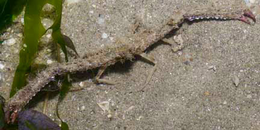
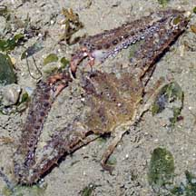
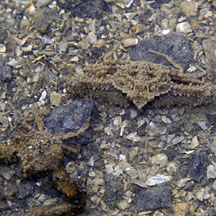
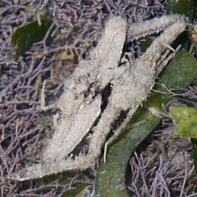
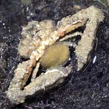
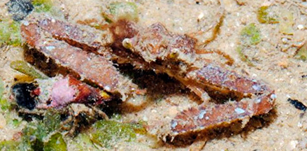

|
|
| crabs text index | photo index |
| Phylum Arthropoda > Subphylum Crustacea > Class Malacostraca > Order Decapoda > Brachyurans > Family Parthenopidae |
| Common elbow crabs awaiting identification Family Parthenopidae updated Dec 2019
Where seen? These tiny, slow-moving crabs look like bits of dirt or junk among seaweeds. Look very carefully to find them. Elbow crabs are commonly seen on our Northern shores, among seagrasses and seaweeds. Features: Body width 1-2cm. An obvious feature of the crab (once you can actually see the crab) is its elbows: highly elongated large pincers that stick way out from the sides of its body. The upper finger is moveable and curved towards the immobile lower finger. Males may have larger pincers than females. The thin walking legs are small and have pointed tips. Body somewhat triangular or pentangonal, with eyes at the pointed tip. The crab's body and claws may be fuzzy or bumpy and coloured the same as mud or sand. Some have fluffy growths and other encrustations, even keelworms growing on the body and arms. |
 Pincers many times longer than its body. Changi, May 06 |
 Changi, Aug 09 |
| The pincers are large, relative to the crab, and look like they can
do some serious damage to small prey. The inner surface of the pincers
have a row of coloured bumps and spots that are probably used to startle
predators. Elbow crabs commonly seen on our shores could belong to various species including Parthenope sp. and Rhinolambrus sp. They are difficult to identify in the field. |
|
 Just moulted. Pulau Ubin, May 03 |
 Pair about to mate? Cyrene Reef, Jun 09 |
 Mama crab with egg mass on her abdomen. Pulau Sekudu, Jun 05 |
| Elbow crab food: The elbow crab
eats worms and small snails and clams. Status and threats: Some of our elbow crabs are listed among the threatened animals of Singapore. Like other creatures of the intertidal zone, they are affected by human activities such as reclamation and pollution. Trampling by careless visitors also have an impact on local populations. |
 Two crabs, about to mate? |
| Common elbow crabs on Singapore shores |
On wildsingapore
flickr
|
| Other sightings on Singapore shores |
 St John's Island, Feb 13 Photo shared by Loh Kok Sheng on his blog. |
|
Acknowledgement
References
|